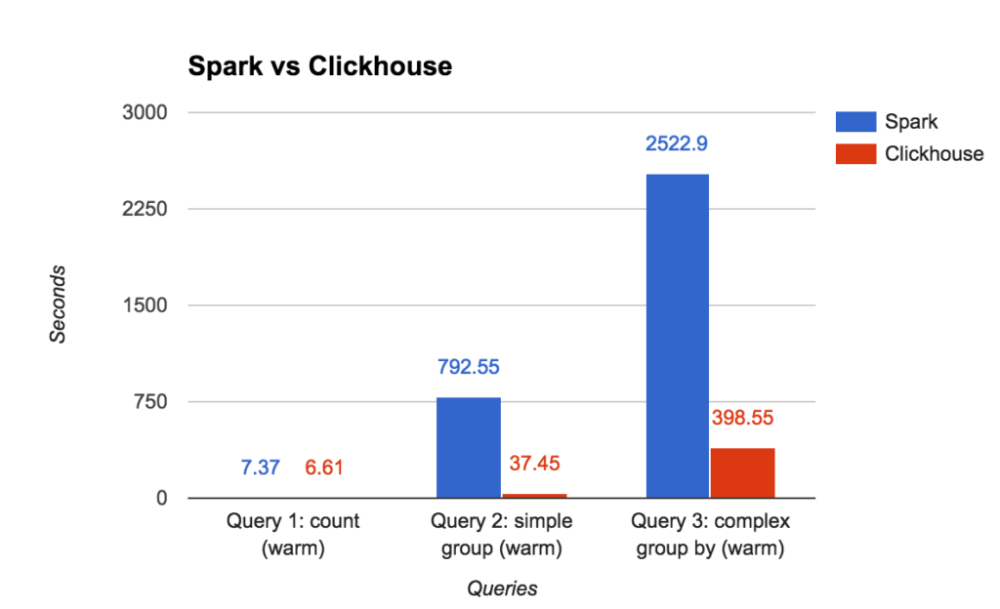

История
Яндекс.Метрика — сервис веб-аналитики.
В России первый, в мире — второй.

Ежедневно приходит ~25 млрд. событий.
Надо показывать отчёты в реальном времени.
Алексей, разработчик ClickHouse.
С 2008 занимался движком обработки данных в Яндекс.Метрике.
Яндекс.Метрика — сервис веб-аналитики.
В России первый, в мире — второй.
Ежедневно приходит ~25 млрд. событий.
Надо показывать отчёты в реальном времени.
Всё отлично работало. Пользователь мог получить примерно 50 разных отчётов.
Но есть проблема. Нам хочется большего. Чтобы каждый отчёт был сколь угодно кастомизируемым.
Быстро сделали прототип и на его основе реализовали "Конструктор отчётов".
Это 2010 год.
Стало понятно, куда двигаться дальше.
Нам нужна хорошая column-oriented DBMS.
Так работают row-oriented системы:

Так работают column-oriented системы:

Ничего готового не подошло.
Тогда мы сделали ClickHouse.
«Эволюция структур данных в Яндекс.Метрике»

* Если вы хотите попробовать ClickHouse, достаточно и одного сервера.
Нам удалось сделать систему сравнительно удобной.
С самого начала мы имели подробную документацию.
В течение пары лет ClickHouse распространился по другим отделам Яндекса.
Почта, Маркет, Директ, Вебмастер, AdFox, Инфраструктура, Бизнес аналитика...
Есть случаи, когда аналитики самостоятельно устанавливали ClickHouse на виртуальные машины и успешно использовали без каких-либо вопросов.
Потом мы решили — ClickHouse слишком хорошая система, чтобы нам одним на нём сидеть.
Чтобы было веселее, надо подсадить на ClickHouse людей снаружи, пусть радуются. Решили сделать open-source.
Лицензия Apache 2.0 — минимум ограничений.
Цель — максимальное распространение продукта.
Мы хотим, чтобы продуктом Яндекса пользовались по всему миру.
См. “Яндекс открывает ClickHouse”
Хорошо структурированные, очищенные, неизменяемые события.
Click stream. Веб-аналитика. Рекламные сети. RTB. E-commerce.
Аналитика онлайн игр. Данные сенсоров и мониторингов. Телеком данные.
Финансовые транзакции. Биржевая аналитика.
OLTP
В ClickHouse нет UPDATE и полноценных транзакций.
Key-Value
Если нужны частые запросы на обновление по ключу, используйте другое решение.
Blob-store, document oriented
ClickHouse предназначен для большого количества мелко-гранулированных данных.
Сотни компаний в России и рядом
Яндекс, Mail.ru, Rambler, СКБ Контур…
Десятки компаний в Европе, США, Китае
Cloudflare, Wikimedia, Lifestreet…
Поисковый движок и аналитика по Bitcoin транзакциям:
https://blockchair.com/
"Крутятся довольно большие таблицы, используется только один сервер и всё работает ну очень быстро — при любых фильтрах и сортировке там всё почти мгновенно."
Биоинформатика - эволюционная генетика:
https://github.com/msestak/FindOrigin
"We are exploring evolution of novel genes in genomes because if seems that genomes are far from being static as previously believed and what actually happens is that new genes are constantly being added and old genes are lost."
Эксперимент LHCb в БАК:
https://www.yandex.com/company/press_center/press_releases/2012/2012-04-10/
— от безысходности.
Яндекс.Метрика должна работать.
Чтобы быстро обрабатывать аналитический запрос, система должна:
1. Быстро читать.
2. Быстро считать.
1. Быстро читать.
– локальность по первичному ключу;
– столбцы - читаем только нужные;
– строгая типизация;
– сжатие данных.
2. Быстро считать.
– векторный движок;
– специализация структур данных;
– низкоуровневые оптимизации.
Алгоритмическая оптимизация.
MergeTree, локальность расположения данных на диске
— быстрые диапазонные запросы.
Пример: функция uniqCombined состоит из комбинации трёх различных структур данных, подходящих под разные диапазоны кардинальностей.
Низкоуровневая оптимизация.
Пример: vectorized query execution.
Специализация и внимание к деталям.
Пример: у нас есть 17 разных алгоритмов выполнения GROUP BY. Для вашего запроса выбирается лучший.
https://www.percona.com/blog/2017/02/13/clickhouse-new-opensource-columnar-database/
Itai Shirav:
«I haven't made a rigorous comparison, but I did convert a time-series table with 9 million rows from Postgres to ClickHouse.
Under ClickHouse queries run about 100 times faster, and the table takes 20 times less disk space. Which is pretty amazing if you ask me».
Bao Dang:
«Obviously, ClickHouse outperformed PostgreSQL at any metric».
Timur Shenkao:
«ClickHouse is extremely fast at simple SELECTs without joins, much faster than Vertica».
Ömer Osman Koçak:
«When we evaluated ClickHouse the results were great compared to Prestodb. Even though the columnar storage optimizations for ORC and Clickhouse is quite similar, Clickhouse uses CPU and Memory resources more efficiently (Presto also uses vectorized execution but cannot take advantage of hardware level optimizations such as SIMD instruction sets because it's written in Java so that's fair) so we also wanted to add support for Clickhouse for our open-source analytics platform Rakam (https://github.com/rakam-io/rakam)»
«ClickHouse показывает сравнимую скорость на таком запросе за 30 дней и в 8 раз быстрее (!) на таком запросе. В планах есть протестировать и другие запросы, еще не добрались.
Скорость выполнения запросов стабильна. В Google BigQuery в период пиковых нагрузок, например в 4:00 p.m. PDT или в начале месяца, время выполнения запросов может заметно увеличиваться».
«В этом году мы развернули сборку на основе Druid — Imply Analytics Platform, а также Tranquility, и уже приготовились запускать в продакшн… Но после выхода ClickHouse сразу отказались от Druid, хотя потратили два месяца на его изучение и внедрение».
«结论：clickhouse速度更快！»
«In conclusion, ClickHouse is faster!»
HTTP REST
clickhouse-client
JDBC (production), ODBC (beta)
Python, PHP (в т.ч. Doctrine, Yii2), Perl, Go,
Node.js, Ruby, C++, .NET, Scala, R, Julia, Rust
Tabix (tabix.io) — разработан специально для ClickHouse.
А также:
Grafana, Redash, Apache Zeppelin,
Superset, Power BI…
Сайт: https://clickhouse.yandex/
Google groups: https://groups.google.com/forum/#!forum/clickhouse
Рассылка: clickhouse-feedback@yandex-team.com
Telegram чат: https://telegram.me/clickhouse_en и https://telegram.me/clickhouse_ru (уже 680 участников)
GitHub: https://github.com/yandex/ClickHouse/
+ встречи. Москва, Санкт-Петербург, Новосибирск,
Екатеринбург, Сан-Франциско... Далее: Киев, Минск...